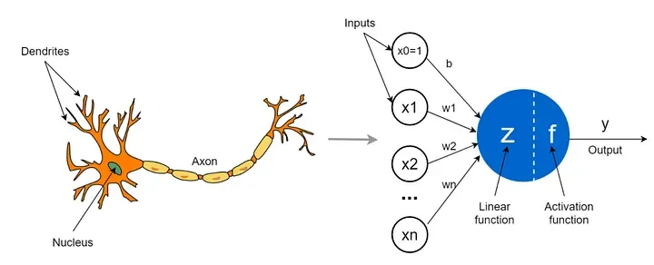

Artificial Neural Networks (ANNs) are one of the most important concepts in machine learning and artificial intelligence. Inspired by how the human brain works, ANNs are designed to recognize patterns, make predictions, and solve problems. This article explains ANNs in simple terms with formulas, diagrams, and examples.
What Is an Artificial Neural Network?
An artificial neural network is a system of algorithms that tries to mimic the way the human brain processes information. It consists of:
- Input Layer
- Hidden Layers
- Output Layer
Each part of the ANN is made up of neurons, which are small units that work together to solve problems.
How Does ANN Work?
1. The Structure of a Neuron
Output of a neuron:
- : Inputs to the neuron
- : Weights for each input
- : Bias
- : Activation function
2. Weights and Bias
- Weights determine the importance of each input.
- Bias allows the model to shift the output curve and improve learning.
3. Activation Function
The activation function decides whether a neuron's output should be passed to the next layer. Common activation functions are:
- Sigmoid
- ReLU (Rectified Linear Unit)
- Tanh
Layers in ANN
- Input Layer: This layer accepts the raw data as input.
- Hidden Layers: These layers process the input data by performing mathematical operations. They use weights, biases, and activation functions to transform the data.
- Output Layer: This layer provides the final result. For example, in a classification problem, it outputs the class label.
How Does Learning Happen in ANN?
Learning in an ANN involves adjusting weights and biases to minimize error. This is done in three main steps:
1. Forward Propagation
The input data is passed through the network from the input layer to the output layer.
2. Loss Function
The error between the predicted output and the actual output is calculated using a loss function. Common loss functions include:
- Mean Squared Error (MSE)
- Cross-Entropy Loss
3. Backpropagation
Backpropagation updates the weights and biases to reduce error. It uses:
- Gradient Descent to minimize the loss function
Here, is the learning rate, which controls how much to adjust the weights.
Applications of ANN
ANNs are widely used in various fields, such as:
- Image Recognition: Identifying objects in photos.
- Speech Recognition: Converting speech to text.
- Natural Language Processing (NLP): Language translation and chatbots.
- Finance: Predicting stock prices and detecting fraud.
Advantages of ANN
- Can learn and model complex relationships.
- Works well with large datasets.
- Can generalize to unseen data.
Disadvantages of ANN
- Requires a lot of data for training.
- Computationally expensive.
- Can be difficult to interpret.